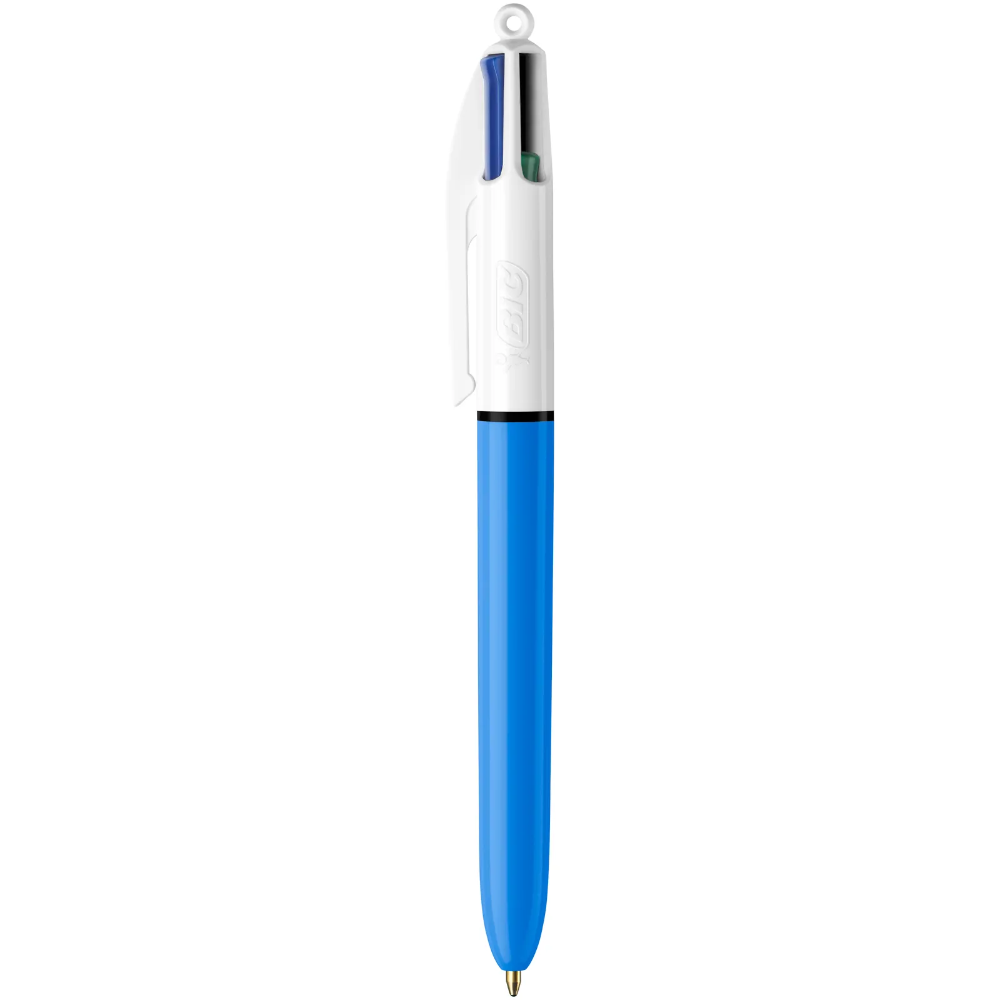

Avec le stylo BIC, chaque mot compte. Laissez votre créativité s’exprimer librement, que ce soit pour écrire, dessiner ou annoter vos idées.
Notre technologie garantit un flux d’encre fluide, pour que chaque trait soit parfait, du premier au dernier mot.